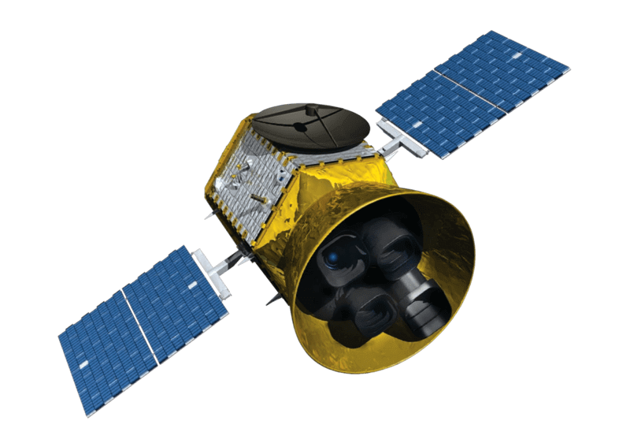

How we explore Mars

A lot of different government organisations and companies are currently interested in exploring Mars. All the big nations want to be the first to know the most about our neighbour planet, and companies like SpaceX are currently interested to turn Mars into some commercial use.
Currently, there is only a couple of countries that explore Mars. The leading country is the US with its organisation Nasa.